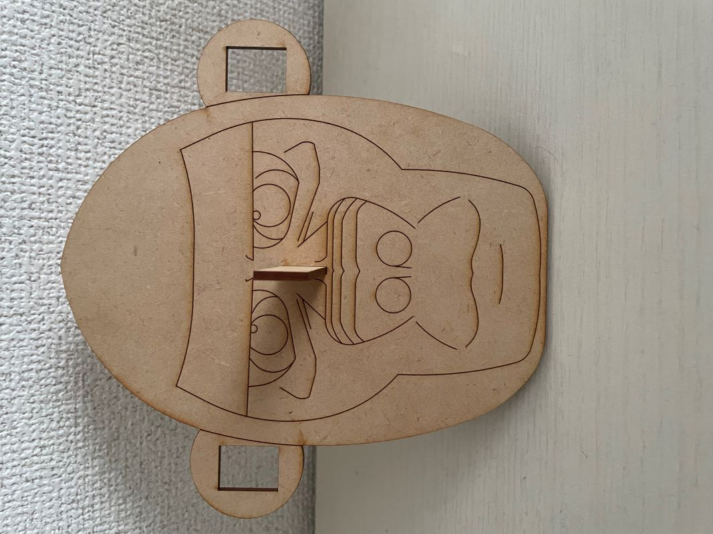
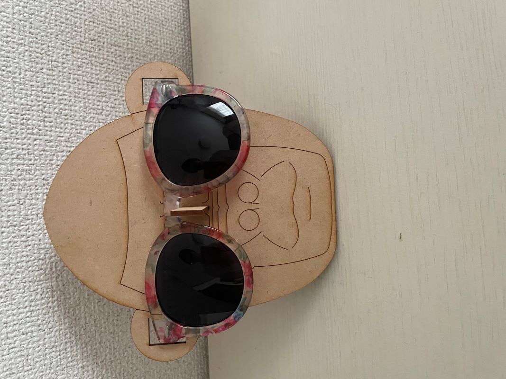
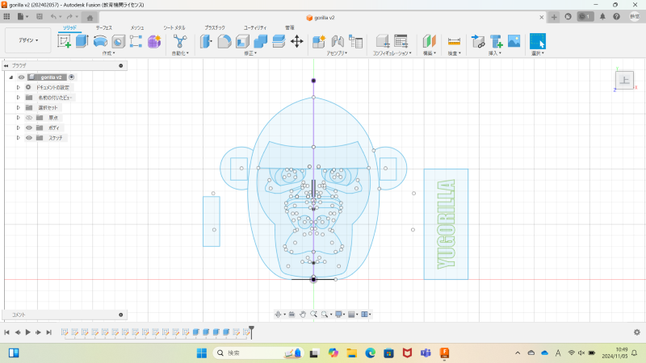
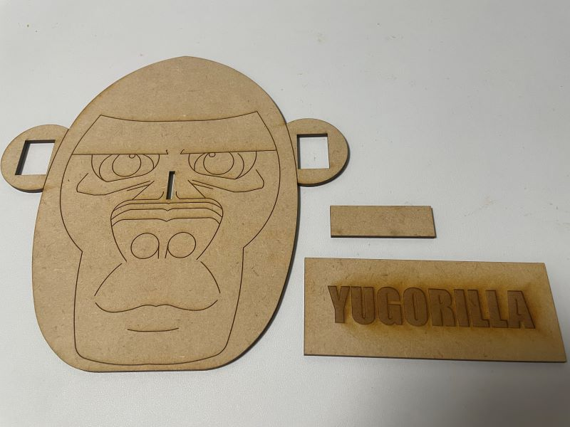
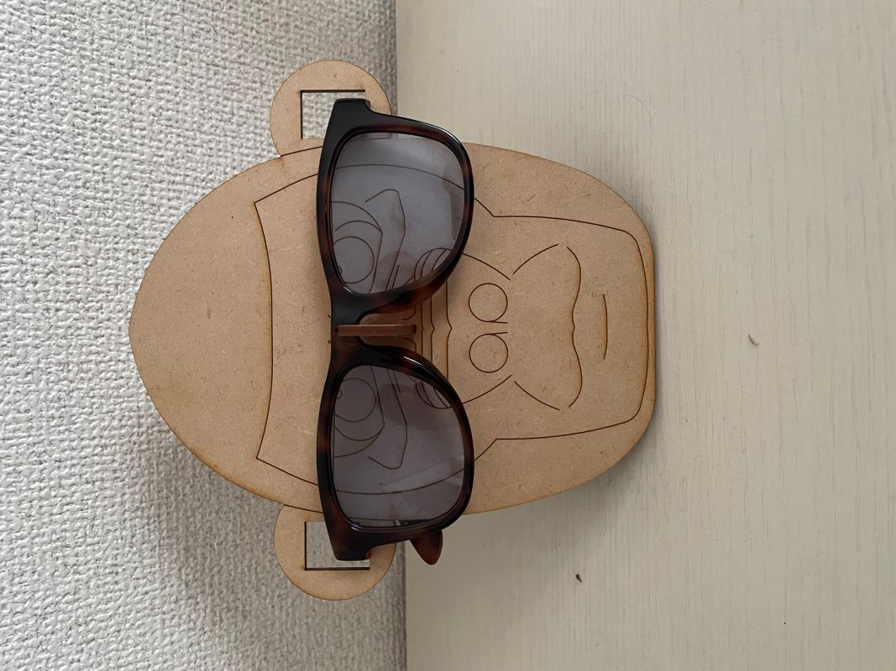
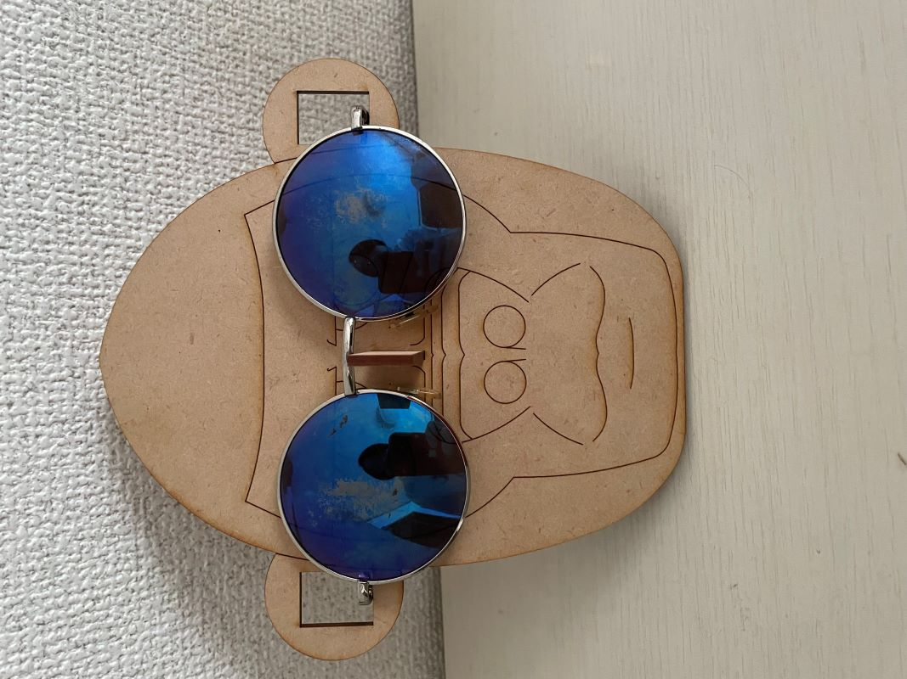
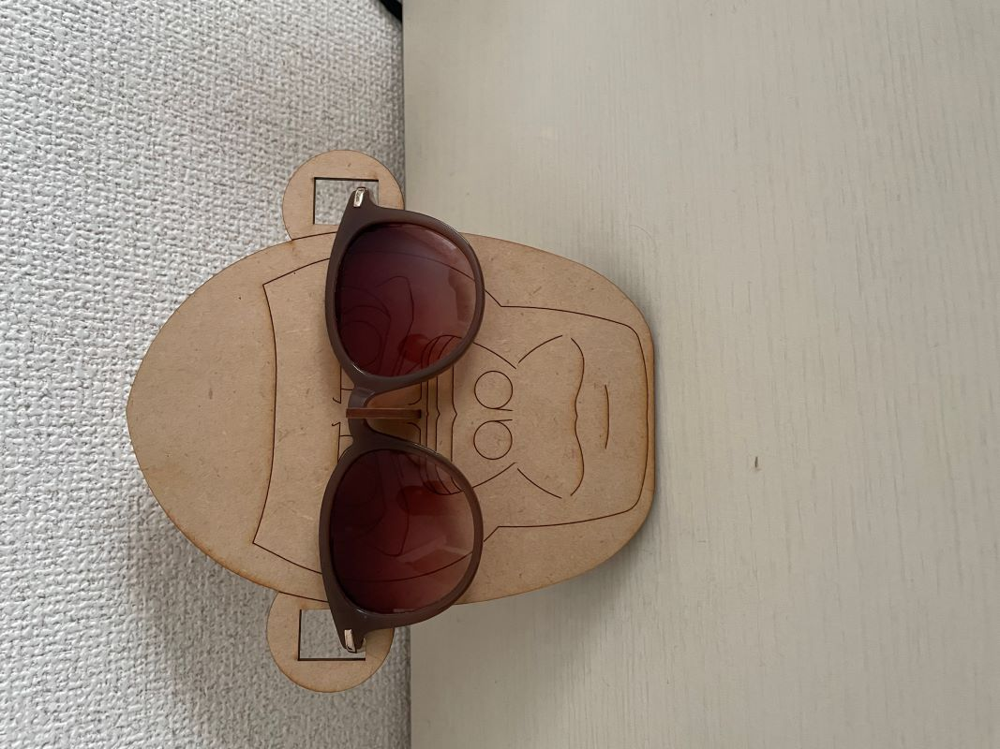
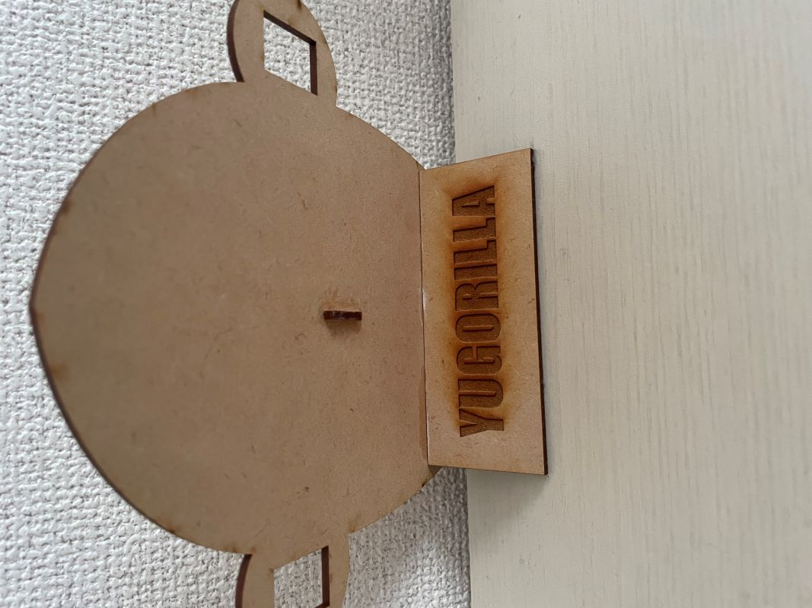

「乗り鉄のためのカードケース」
[我々が取り組んだ問題]
今回、我々の班は電車の中で紙1枚の路線図を広げて見ていた外国人に焦点を当てた。はっきり言ってこの方は謎が多すぎる。なぜスマホを使わないのか。
なぜ荷物が路線図が書かれた紙１枚のみなのか。そもそも迷子なのか。観光客なのか。真相は不明だが、私はこの方は「乗り鉄」なのではないかと勝手に思った。
いや、思うことにした。「手ぶら乗り鉄外国人」を楽しませるものを作ることにした。
[発送段階スケッチ]


[作品の説明]
ユウゴ(自分)が作ったゴリラ。名付けてユウゴリラ。普通のゴリラのスタンドだと思わせて、サングラススタンドになるのが
ユウゴリラの最大の強みです。別の言い方をすれば、普通のサングラススタンドではなく、ゴリラの形をしたサングラススタンド
だということになります。サングラスをスタンドに飾るとゴリラがサングラスをかけているような感じになります。

"
「なぜゴリラ？」「グラサンかけたゴリラおもろ笑」ユウゴリラを見てこのように思ったそこのアナタ！もう心が動いちゃってますやん。まあ実際は、
「ただユニークな作品を作りたかったから」ゴリラにしただけです。順番に説明すると、まずシンプルにサングラススタンドが欲しかったから作ろうと思いました。
そしてこのスタンドを心を動かす作品にするためにはどうすればよいかを試行錯誤した結果、サングラスをかけたゴリラに行き着いたのです。ユーモアが
溢れまくってるでしょ？ちなみに「ユウゴリラ」という名前は完全に後付けです。
[制作過程]
最初にfusionでゴリラのスケッチをしました。

マイサングラスの長さを測り、それを基にまずスケッチブックに手書きで大まかな設計図を書いてから、fusionにスケッチしました。次にゴリラの顔面を
支えるためのパーツと、サングラスを支えるためのパーツを作りました。顔面を支えるパーツには「YUGORILLA」というテキストを入れてみました。

これらのスケッチをdxf形式で保存してレーザーカット！接着剤を使いながら組み立ててようやくスタンドが完成しました！
 
 
[制作過程の中で調べたこと]
今回は顔をスケッチするのでほぼミラーリング機能を使ってスケッチしました。fusionのミラーリングやうまく顔をスケッチする方法を調べまくりました。
またMDFを使った木用雑貨や、レーザー加工作品を調べまくりました。スマホスタンドや眼鏡スタンドを見て、今回の作品のアイデアがひらめきました。
[感想・まとめ]
fusionでillustrator並みのスケッチをした。めっちゃ苦労した。時間もかかった。無料でどこまで挑戦できるかという自分のケチ魂が結局自分の首を絞めたので
今度はしっかりillustrartorを使ってみたい。ファブラボの方にも大変お世話になった。自分一人で作品が作れるようになりたい。前回のピンセットと比べてみたら
自分の成長を実感することができたが、まだ足りない。「スムーズにクオリティの高い作品を作る」ことを目標に、もっと腕をアゲていきたい。